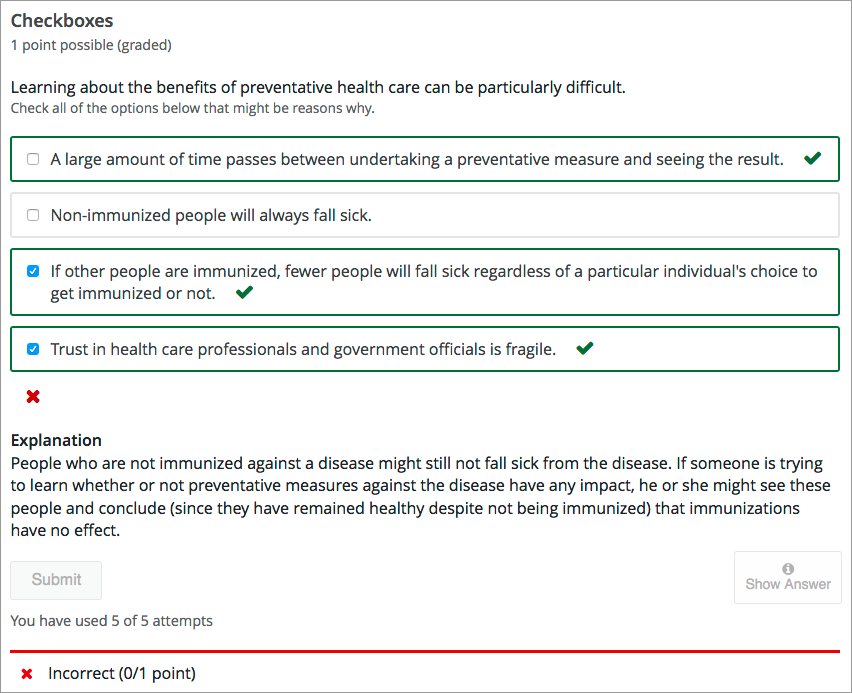
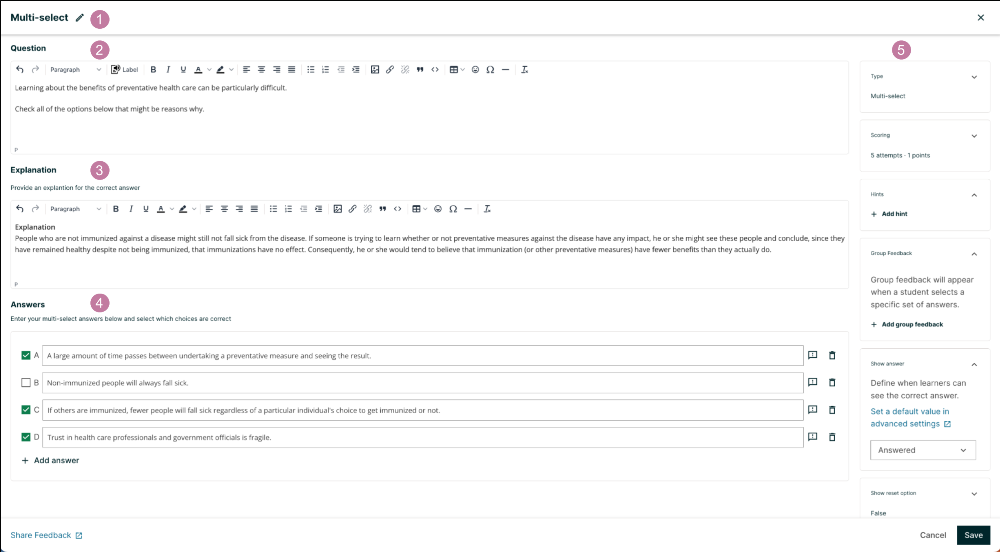
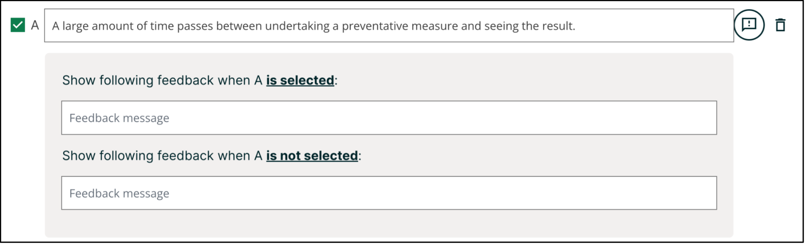
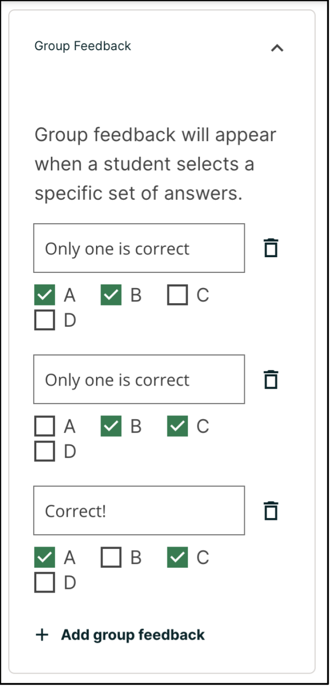
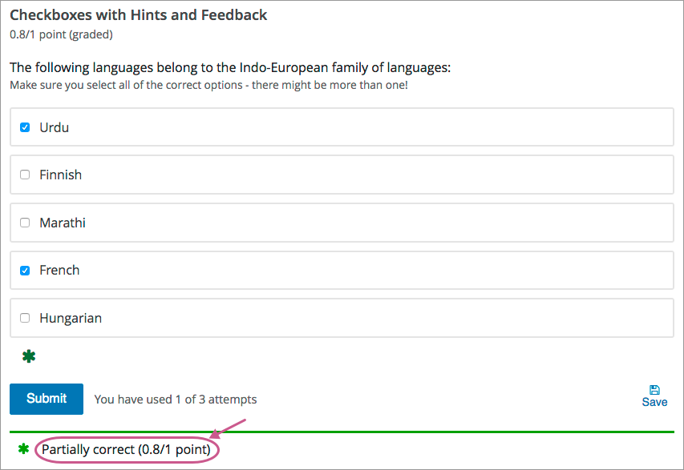

10.23. Multi-select Problem#
Note
EdX offers full support for this problem type.
The multi-select problem type is a simple problem type that can be added to any course. At a minimum, multi-select problems include a question or prompt and several answer options. By adding hints, feedback, or both, you can give learners guidance and help when they work on a problem.
For more information about the simple problem types, see Working with Problem Components.
10.23.1. Overview#
In multi-select problems, learners select one or more options from a list of possible answers. To answer the problem correctly, a learner must select all of the options that are correct answers, and none of the options that are incorrect. The course team must set up each multi-select problem to have at least one correct answer.
As a best practice, be sure that all of the answer choices are unambiguous, and avoid trick questions. Multi-select problems with ambiguity can be frustrating to learners, especially if the problems have a limited number of attempts.
10.23.1.1. Example Multi-select Problem#
In the LMS, learners complete a multi-select problem by selecting the answer options that they believe are correct as well as leaving unselected the answer options that they believe are incorrect. An example of a completed multi-select problem follows.
This problem was incorrectly answered because the learner selected only two of the three required answer options. This example also shows that the learner selected Show Answer to reveal the correct answer and an explanation.
10.23.2. Adding a Multi-select Problem#
You add multi-select problems in Studio by selecting the Problem component. In the problem editor, select the Multi-select option. Fill in the fields on this screen to create your problem.
{kind=link}
Creating a multi-select problem is as simple as:
Editing the Display Name. Click the pen icon to edit.
Filling in the Question field.
Filling in the Explanation field. When this is shown to learners is based on the selection in the Show answer panel on the right.
Filling in the Answer fields. Select the correct answer(s) by ticking off the checkbox(es). Additional answers can be added by clicking the Add answer button. Answers can be deleted by clicking the trash can icon. Feedback can be provided for each answer. More information on feedback can be found in the following section.
Selecting and filling in any desired settings on the right.
If you have any questions on the specifics of using the simple editor, please check out The Simple Editor and Defining Settings for Problem Components.
10.23.2.1. Adding Feedback#
For an overview of feedback in problems, see Adding Feedback and Hints to a Problem. For multi-select problems, you can add feedback for each of the answer options you provide in the problem. You can also identify different combinations of answer options that learners are likely to select, and add group feedback for those combinations.
10.23.2.1.1. Adding Feedback for Individual Answers#
In multi-select problems, you can provide feedback for each answer that a learner can select, with distinct feedback depending on whether or not the learner selects that answer. This means that there are several possible types of feedback.
The learner selects a correct answer. This type of feedback should indicate why the answer is correct.
The learner does not select a correct answer. This type of feedback should indicate that the learner missed checking this answer and why it is correct.
The learner selects an incorrect answer. This type of feedback should indicate that the learner incorrectly checked this answer and why it is incorrect.
The learner does not select an incorrect answer. This type of feedback should reinforce why the learner correctly left this answer unselected.
You can access the feedback panel shown below by clicking the button to the right of the answer text.
{kind=link}
10.23.2.1.2. Adding Group Feedback#
You can configure the multi-select problem to provide group feedback. Group feedback is feedback given for a specific combination of answers. For example, if you have three possible answers in the problem, you can define specific feedback for when a learner selects each combination of possible options.
A
B
C
A, B
B, C
A, C
A, B, C
For problems with more than three answers, providing specific feedback for each combination can become difficult. For such problems, you might choose to define group feedback for more likely combinations of answers or for combinations of answers that reflect common learner misunderstandings. If you do not define feedback for a combination that a learner selects, the learner receives feedback for the individual selections.
Group feedback can be entered in the Group Feedback panel on the right of the editor. The example below shows feedback for combinations of (A, B), (B, C) and (A, C) respectively.
{kind=link}
Note
If you configure individual option feedback for every answer, and you also provide group feedback, when learners select the exact combination of answer choices defined, they only see the compound feedback. In this example, learners who select apple (A), pumpkin (B), and tomato (D) see the message “An apple, pumpkin, and tomato are all fruits as they are all the fertilized ovaries of a plant and contain seeds.” They do not also see the individual feedback for selecting A, B, and D, and for leaving C unselected.
10.23.2.2. Adding Hints#
You can add hints to a multi-select problem. For an overview of hints in problems, see Adding Feedback and Hints to a Problem.
In the settings panels on the right of the editor, you’ll find a Hints panel.

Click the Add hint button to add a new hint text field. To delete any hints you’ve added, click the trash can icon next to its respective hint field.
Note
You can configure any number of hints. The learner views one hint at a time and views the next one by selecting Hint again.
10.23.3. Editing Multi-select Problems using the Advanced Editor#
If the simple editor is not enough to meet your needs, you can switch over to the advanced editor. In the setting panels on the right of the editor, click Show advanced settings, then scroll down and click Switch to advanced editor.
You can use the advanced editor to identify the elements of a multi-select problem with OLX. For more information, see Multi-select Problem OLX Reference. To format equations, you can use MathJax. For more information, see MathJax for Mathematics.
You can see the OLX for the example problem from the Overview section below.
<problem>
<choiceresponse>
<label>Learning about the benefits of preventative health care can be
particularly difficult.</label>
<description>Check all of the options below that might be reasons why.</description>
<checkboxgroup>
<choice correct="true">A large amount of time passes between
undertaking a preventative measure and seeing the result.</choice>
<choice correct="false">Non-immunized people will always fall sick.</choice>
<choice correct="true">If others are immunized, fewer people will fall
sick regardless of a particular individual's choice to get immunized
or not.</choice>
<choice correct="true">Trust in health care professionals and
government officials is fragile.</choice>
</checkboxgroup>
<solution>
<div class="detailed-solution">
<p>Explanation</p>
<p>People who are not immunized against a disease might still not
fall sick from the disease. If someone is trying to learn whether
or not preventative measures against the disease have any impact,
he or she might see these people and conclude, since they have
remained healthy despite not being immunized, that immunizations
have no effect. Consequently, he or she would tend to believe that
immunization (or other preventative measures) have fewer benefits
than they actually do.</p>
</div>
</solution>
</choiceresponse>
</problem>
Note
You can begin work on the problem in the simple editor, and then switch to the advanced editor. However, after you save any advanced OLX changes you make in the advanced editor, you may not be able to cannot switch back to the simple editor.
10.23.3.1. Adding Feedback#
There are several types of feedback you can add for a multi-select problem and different ways to configure them:
10.23.3.1.1. Adding Feedback for Individual Answers#
In the advanced editor, you configure feedback with the following syntax.
<choice correct="true">Choice label
<choicehint selected="true">Feedback for when learner selects this
answer.</choicehint>
<choicehint selected="false">Feedback for when learner does not select
this answer.</choicehint>
</choice>
For example, the following problem has feedback for each answer.
<problem>
<multiplechoiceresponse>
<label>Which of the following is an example of a vegetable?</label>
<description>You can select only one option.</description>
<choicegroup type="MultipleChoice">
<choice correct="false">apple
<choicehint>An apple is the fertilized ovary that comes from an apple
tree and contains seeds classifying it as a fruit.</choicehint>
</choice>
<choice correct="false">pumpkin
<choicehint>A pumpkin is the fertilized ovary of a squash plant
and contains seeds classifying it as a fruit.</choicehint>
</choice>
<choice correct="true">potato
<choicehint>A potato is an edible part of a plant in tuber form and
is classified as a vegetable.</choicehint>
</choice>
<choice correct="false">tomato
<choicehint>Many people mistakenly think a tomato is a vegetable.
However, because a tomato is the fertilized ovary of a tomato plant
and contains seeds it is classified as a fruit.</choicehint>
</choice>
</choicegroup>
</multiplechoiceresponse>
</problem>
10.23.3.1.2. Customizing Feedback Labels#
By default, the feedback labels shown to learners are Correct and Incorrect. If you do not define feedback labels, learners see these terms when they submit an answer, as in the following example.
Incorrect: A pumpkin is the fertilized ovary of a squash plant and contains
seeds classifying it as a fruit.
You can configure the problem to override the default labels. For example, you can configure a custom label for a specific wrong answer.
Not Quite: Many people mistakenly think a tomato is a vegetable. However,
because a tomato is the fertilized ovary of a tomato plant and contains seeds
it is classified as a fruit.
In the advanced editor, you configure custom feedback labels with the following syntax.
<choice correct="true or false">Answer
<choicehint label="Custom Label">Feedback for learners who select this
answer.</choicehint>
</choice>
For example, the feedback for the following answer option is configured to use a custom label.
<choice correct="false">tomato
<choicehint label="Not Quite">Many people mistakenly think a tomato is a
vegetable. However, because a tomato is the fertilized ovary of a tomato
plant and contains seeds, it is a fruit.</choicehint>
</choice>
Note
The default labels Correct and Incorrect display in the learner’s requested language. If you provide custom labels, they display as you define them to all learners. They are not translated into different languages.
10.23.3.1.3. Adding Group Feedback#
In the advanced editor, you define group feedback by adding a <compoundhint>
element within the <checkboxgroup> element.
.
.
.
</choice>
<compoundhint value="Answer Combination">Feedback when learner selects
this combination of answers.</compoundhint>
</checkboxgroup>
For example, the following group feedback is used when learners select options A, B, and D or A, B, C, and D.
.
.
.
</choice>
<compoundhint value="A B D">An apple, pumpkin, and tomato are all
fruits as they all are fertilized ovaries of a plant and contain
seeds.</compoundhint>
<compoundhint value="A B C D">You are correct that an apple, pumpkin,
and tomato are all fruits as they all are fertilized ovaries of a
plant and contain seeds. However, a potato is not a fruit as it is an
edible part of a plant in tuber form and is classified as a vegetable.
</compoundhint>
</checkboxgroup>
10.23.3.2. Adding Hints#
In the advanced editor, you add the <demandhint> element immediately before
the closing </problem> tag, and then configure each hint using the
<hint> element.
<problem>
.
.
.
<demandhint>
<hint>Hint 1</hint>
<hint>Hint 2</hint>
<hint>Hint 3</hint>
</demandhint>
</problem>
For example, the following OLX for a single select problem shows two hints.
<problem>
<multiplechoiceresponse>
.
.
.
</multiplechoiceresponse>
<demandhint>
<hint>A fruit is the fertilized ovary from a flower.</hint>
<hint>A fruit contains seeds of the plant.</hint>
</demandhint>
</problem>
10.23.3.3. Awarding Partial Credit#
You can configure a multi-select problem to award partial credit to learners who submit an answer that is partly correct.
For an overview of partial credit in problems, see Awarding Partial Credit for a Problem.
Note
Support for partial credit problems in courses on edx.org and edX Edge is provisional. Ensure that you test such problems thoroughly before releasing them to learners. For more information, contact your edX partner manager.
In the following example, the learner selected two of the three correct choices, and did not select any incorrect choices. The learner therefore had four out of five correct answers. Because the course team set this problem up to award partial credit for every correct answer selected and every incorrect answer left unselected (known as every decision counts), the learner earned 80% of the points for this problem.
{kind=link}
You can use the following methods to award partial credit in a multi-select problem.
10.23.3.3.1. Using the Every Decision Counts Method#
You can configure a multi-select problem so that every selection a learner makes for the multi-select problem is evaluated and scored. This method is known as every decision counts (EDC).
With EDC, if “n” is the number of possible answers, learners earn 1/n of the total possible score for each correct answer they select. Learners receive partial credit for every correct answer selected and every incorrect answer left unselected.
For example, if there are four answers, every answer that a learner matches is worth 25% of the total score. A learner also gains 25% for each incorrect answer that a learner does NOT select.
The following table shows how the different combinations of learner selections would score for one EDC problem whose answers are as follows.
Correct answers: A, B, D
Incorrect answers: C
Learner’s Selections |
Score |
Explanation |
|---|---|---|
A, B, D |
100% |
The learner matched each of the 3 correct answers for 75%, and also gained 25% for not selecting the incorrect answer. |
A, B |
75% |
The learner matched 2 of the correct answers for 50%, and also gained 25% for not selecting the incorrect answer. |
A, B, C |
50% |
The learner matched 2 of the correct answers for 50%, but selected the incorrect answer. |
A, C |
25% |
The learner matched 1 of the correct answers for 25%, but selected the incorrect answer. |
10.23.3.3.1.1. Configure an EDC Multi-select Problem#
To configure an EDC multi-select problem, you add the partial_credit="EDC"
attribute to the <choiceresponse> element in the problem OLX.
For example, the following OLX shows the multi-select problem template after it is updated to provide partial credit.
<problem>
<choiceresponse partial_credit="EDC">
<label>Which of the following is a fruit?</label>
<description>Select all that apply.</description>
<checkboxgroup>
<choice correct="true">apple</choice>
<choice correct="true">pumpkin</choice>
<choice correct="false">potato</choice>
<choice correct="true">tomato</choice>
</checkboxgroup>
</choiceresponse>
</problem>
10.23.3.3.2. Using the By Halves Method#
You can configure a multi-select problem so that for every answer that a learner gets wrong, either by not selecting a correct answer or by selecting an incorrect answer, half of the remaining points are deducted from the learner’s score. This method is known as scoring by halves.
Note
By design, partial credit by halves requires the number of answer options to be more than twice the number of incorrect answers. In addition, partial credit is not given for more than two wrong answers, regardless of the total number of answer options. In other words, two wrong answers is scored at 25% only if there are at least 5 answer options. Three or more wrong answers is always scored at 0%, regardless of the number of total answer options.
Partial credit using the by halves method is calculated as follows.
If a learner makes no errors, she receives full credit for the problem.
If a learner makes one error, she receives 50% of the possible points, as long as there are three or more choices in the problem. If a learner makes one error and there are only two choices in the problem, no credit is given.
If a learner makes two errors, she receives 25% of the possible points, as long as there are five or more choices in the problem. If a learner makes two errors and there are only three choices or four choices in the problem, no credit is given.
If a learner makes three errors, she receives no credit for the problem, regardless of how many answer options there are.
The following tables illustrate partial credit score using the halves method, for problems with an increasing number of total answer options.
Number of Incorrect Answers |
Number of Answer Options |
Credit Given (%) |
|---|---|---|
0 |
2 |
100 |
1 |
2 |
0 |
2 |
2 |
0 |
Number of Incorrect Answers |
Number of Answer Options |
Credit Given (%) |
|---|---|---|
0 |
3 |
100 |
1 |
3 |
0 |
2 |
3 |
0 |
3 |
3 |
0 |
Number of Incorrect Answers |
Number of Answer Options |
Credit Given (%) |
|---|---|---|
0 |
4 |
100 |
1 |
4 |
50 |
2 |
4 |
0 |
3 |
4 |
0 |
4 |
4 |
0 |
Number of Incorrect Answers |
Number of Answer Options |
Credit Given (%) |
|---|---|---|
0 |
5 |
100 |
1 |
5 |
50 |
2 |
5 |
25 |
3 |
5 |
0 |
4 |
5 |
0 |
5 |
5 |
0 |
Number of Incorrect Answers |
Number of Answer Options |
Credit Given (%) |
|---|---|---|
0 |
7 |
100 |
1 |
7 |
50 |
2 |
7 |
25 |
3 |
7 |
0 |
4 |
7 |
0 |
5 |
7 |
0 |
10.23.3.3.2.1. Configure a By Halves Multi-select Problem#
To configure a by halves multi-select problem, you add the
partial_credit="halves" attribute to the <choiceresponse> element in
the problem OLX.
The following example shows a multi-select problem that provides partial credit by halves.
<problem>
<choiceresponse partial_credit="halves">
<label>Which of the following is a fruit?</label>
<description>Select all that apply.</description>
<checkboxgroup>
<choice correct="true">apple</choice>
<choice correct="true">pumpkin</choice>
<choice correct="false">potato</choice>
<choice correct="true">tomato</choice>
</checkboxgroup>
</choiceresponse>
</problem>
10.23.4. Multi-select Problem OLX Reference#
Note
You can also set attributes and options by adding a <script> element.
For more information, see Using the Script Element.
10.23.4.1. Template#
<problem>
<choiceresponse>
<label>Question or prompt text</label>
<description>Information about how to answer the question</description>
<checkboxgroup>
<choice correct="false">Answer option A (incorrect)</choice>
<choice correct="true">Answer option B (correct)</choice>
<choice correct="true">Answer option C (correct)</choice>
</checkboxgroup>
<solution>
<div class="detailed-solution">
<p>Optional header for the explanation or solution</p>
<p>Optional explanation or solution text</p>
</div>
</solution>
</choiceresponse>
<demandhint>
<hint>Hint 1</hint>
<hint>Hint 2</hint>
</demandhint>
</problem>
10.23.4.2. Elements#
For multi-select problems, the <problem> element can include this hierarchy of
child elements.
<choiceresponse>
<label>
<description>
<checkboxgroup>
<choice>
<choicehint>
<compoundhint>
<solution>
<demandhint>
<hint>
In addition, standard HTML tags can be used to format text.
10.23.4.2.1. <choiceresponse>#
Required. Indicates that the problem is a multi-select problem.
10.23.4.2.1.1. Attributes#
Attribute |
Description |
|---|---|
|
Optional. Specifies the type of partial credit given. |
10.23.4.2.1.2. Children#
<label><description><checkboxgroup><solution>
10.23.4.2.2. <label>#
Required. Identifies the question or prompt. You can include HTML tags within this element.
10.23.4.2.2.1. Attributes#
None.
10.23.4.2.2.2. Children#
None.
10.23.4.2.3. <description>#
Optional. Provides clarifying information about how to answer the question. You can include HTML tags within this element.
10.23.4.2.3.1. Attributes#
None.
10.23.4.2.3.2. Children#
None.
10.23.4.2.4. <checkboxgroup>#
Required. Indicates the beginning of the list of options.
10.23.4.2.4.1. Attributes#
None.
10.23.4.2.4.2. Children#
<choice><compoundhint>
10.23.4.2.4.2.1. <choice>#
Required. Designates an answer option.
10.23.4.2.4.3. Attributes#
Attribute |
Description |
|---|---|
|
Indicates a correct or incorrect answer.
|
10.23.4.2.4.4. Children#
<choicehint>
10.23.4.2.5. <choicehint>#
Optional. Specifies feedback for the answer.
10.23.4.2.5.1. Attributes#
Attribute |
Description |
|---|---|
|
Required. |
10.23.4.2.5.2. Children#
None.
10.23.4.2.6. <compoundhint>#
Optional. Specifies feedback for a specific combination of answers.
10.23.4.2.6.1. Attributes#
Attribute |
Description |
|---|---|
|
Indicates the combination of selected answers that triggers this feedback. Answers are identified by uppercase letters, in ascending alphabetical order. |
10.23.4.2.6.2. Children#
None.
10.23.4.2.7. <solution>#
Optional. Identifies the explanation or solution for the problem, or for one of the questions in a problem that contains more than one question.
This element contains an HTML division <div>. The division contains one or
more paragraphs <p> of explanatory text.
10.23.4.2.8. <demandhint>#
Optional. Specifies hints for the learner. For problems that include multiple questions, the hints apply to the entire problem.
10.23.4.2.8.1. Attributes#
None.
10.23.4.2.8.2. Children#
<hint>
10.23.4.2.9. <hint>#
Required. Specifies additional information that learners can access if needed.
10.23.4.2.9.1. Attributes#
None.
10.23.4.2.9.2. Children#
None.
10.23.4.3. Using the Script Element#
You can use the <script> element to programmatically set attributes and
options for your multi-select problems. You could use this feature to display
different questions/answers depending on variable factors, like time of day, or
randomly generated numbers.
10.23.4.3.1. Use the Advanced Editor to Configure the Script Element#
You must use the advanced editor to configure a
<script> element.
The contents of the <script> element must be enclosed in <![CDATA[ …
]]> markers, to indicate that the enclosed code should not be interpreted
as XML.
The code in the <script> element is run on the server before the problem is
shown to learners. Note that only Python script types are supported.
The following OLX example uses random numbers to generate different answer choices for each learner, and mathematical operators to determine each choice’s correctness.
<problem>
<script type="text/python">
<![CDATA[
random.seed(anonymous_student_id) # Use different random numbers for each student.
a = random.randint(1,10)
b = random.randint(1,10)
c = a + b
ok0 = c % 2 == 0 # check remainder modulo 2
text0 = "$a + $b is divisible by 2"
ok1 = c % 3 == 0 # check remainder modulo 3
text1 = "$a + $b is divisible by 3"
ok2 = c % 5 == 0 # check remainder modulo 5
text2 = "$a + $b is divisible by 5"
ok3 = not any([ok0, ok1, ok2])
text3 = "None of the above statements is true."
]]>
</script>
<choiceresponse>
<label>Which statements about the number $a+$b are true? Select all that apply.</label>
<checkboxgroup direction="vertical">
<choice correct="$ok0">$text0 ... (should be $ok0)</choice>
<choice correct="$ok1">$text1 ... (should be $ok1)</choice>
<choice correct="$ok2">$text2 ... (should be $ok2)</choice>
<choice correct="$ok3">$text3 ... (should be $ok3)</choice>
</checkboxgroup>
</choiceresponse>
</problem>
Note
After saving a block with scripts, you’ll see an error on the block in your unit if your script cannot be executed. One common error is the indentation error. The script must start on no indentation regardless of the indentation of the previous line.